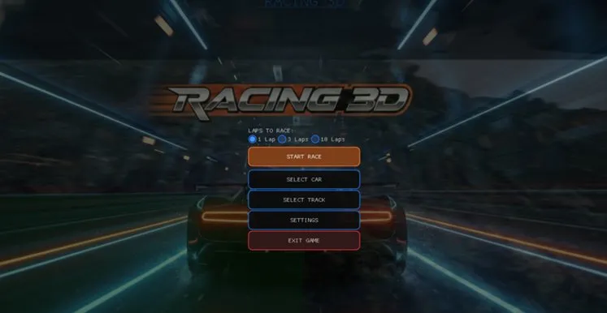
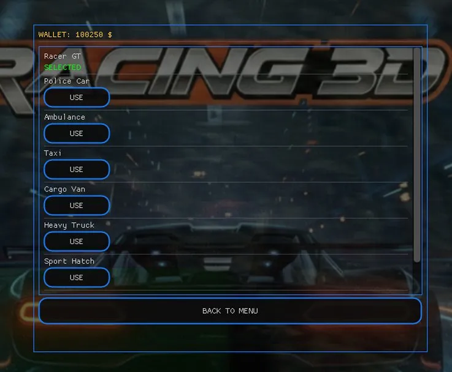
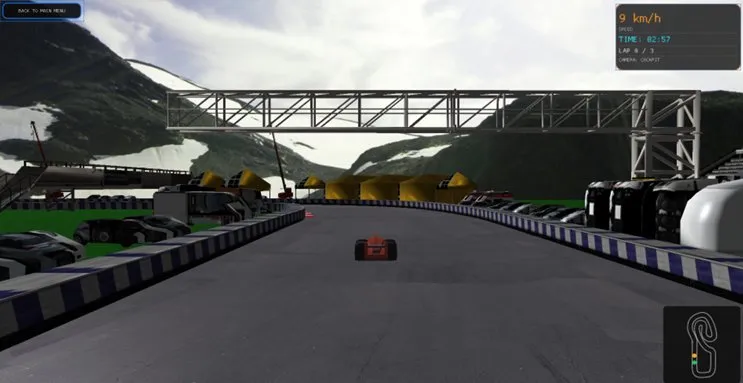
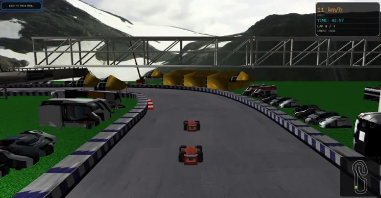
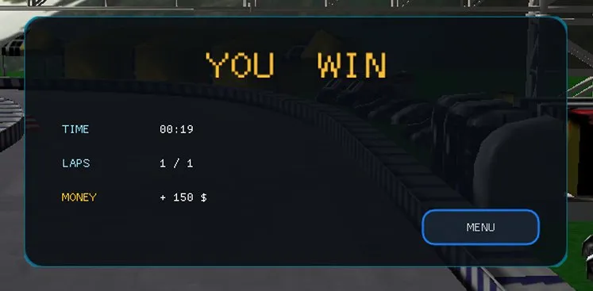

Racing 3D
Autorski silnik wyścigowy napisany w C++ i OpenGL 3.3 — od renderowania shaderów po symulację fizyki Bullet Physics.
Gra w akcji





Autorski silnik
od zera
Kluczowym założeniem było stworzenie trójwymiarowego symulatora wyścigów bez użycia gotowych silników jak Unity czy Unreal Engine. Cały potok renderowania, fizyka i logika gry zostały napisane w C++17 od podstaw.
Projekt był realizowany w ramach przedmiotu Grafika 3D i programowanie kart graficznych na Akademii Tarnowskiej.
Stack technologiczny
Jak to działa
Aplikacja działa w trzech stanach: SPLASH_SCREEN, MAIN_MENU
i RACING. Każdy stan determinuje co jest renderowane w danej klatce.
enum GameState {
SPLASH_SCREEN,
MAIN_MENU,
RACING
};
Każda klatka: przetwarzanie wejścia → aktualizacja fizyki → renderowanie. Delta Time zapewnia tę samą prędkość gry na 30 i 144 FPS.
float deltaTime = currentFrame - lastFrame; // ruch * deltaTime = m/s
Model oświetlenia z trzema składnikami: ambient, diffuse, specular.
Autorskie shadery phong.vert i phong.frag.
vec3 result = (ambient + diffuse + specular) * texColor.rgb;
Klasa Karting parsuje format Wavefront OBJ linia po linii,
z automatycznym generowaniem normalnych przez iloczyn wektorowy.
glm::vec3 n =
glm::normalize(
glm::cross(
v1-v0, v2-v0));
Każde koło rzuca promień (raycast) do podłoża. Siła zawieszenia, tarcie i silnik są obliczane osobno dla każdego koła przez Bullet Physics.
vehicle->applyEngineForce( force, 2); // tylna oś vehicle->setSteeringValue( val, 0); // przednia oś
Przeciwnik podąża za punktami nawigacyjnymi toru.
Kąt skrętu obliczany przez atan2 i ograniczany przez glm::clamp.
float steering =
glm::clamp(
angleDiff / 30.0f,
-1.0f, 1.0f);
Klawiatura
Jak uruchomić
git clone https://github.com/Andrii418/Racing3D.git cd Racing3D
.\vcpkg\vcpkg install glfw3 glm glew --triplet x64-windows
cmake -S . -B build -G Ninja -DCMAKE_BUILD_TYPE=Release \ -DCMAKE_TOOLCHAIN_FILE=.\vcpkg\scripts\buildsystems\vcpkg.cmake cmake --build build --config Release
.\build\Racing3D.exe